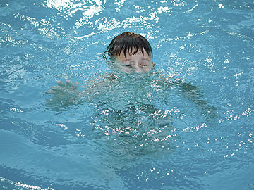
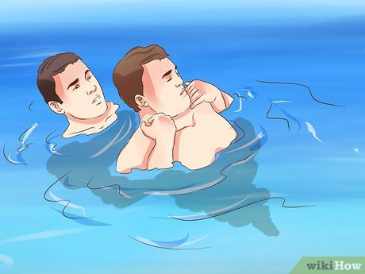
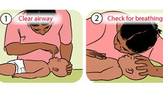
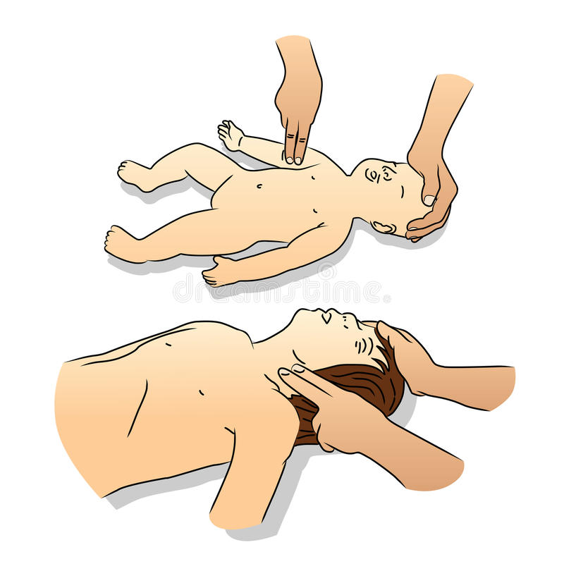
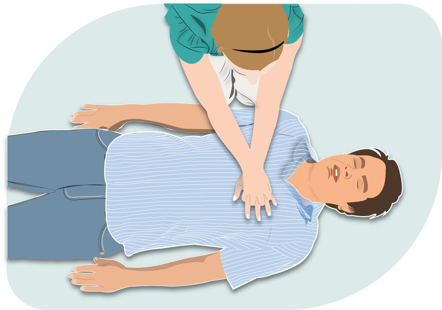

Back
Drowning

If someone is in difficulty in water, don't enter the water unless it's safe to do so. Don't put yourself at risk.
Once the person is on land, you need to check if they're breathing. Ask someone to contact us for medical help.





- Get Help
-
Notify a lifeguard, if one is close. If not, ask someone to call 911.
-
If you are alone, follow the steps below.
- Move the person
- Take the person out of the water
- Check for breathing
- Place your ear next to the person's mouth and nose. Do you feel air on your cheek?
- Look to see if the person's chest is moving.
- If the person is Not breathing
- Check the person's pulse for 10 seconds.
- If There is No Pulse, Start CPR
Carefully place person on back
-
For an adult or child, place the heel of one hand on the center of the chest at the nipple line. You can also push with one hand on top of the other. For an infant, place two fingers on the breastbone.
- For an adult or child, press down at least 2 inches. Make sure not to press on ribs. For an infant, press down about 1 and 1/2 inches. Make sure not to press on the end of the breastbone.
- Do chest compressions only, at the rate of 100-120 per minute or more. Let the chest rise completely between pushes.
- Check to see if the person has started breathing.
- Repeat if Person Is Still Not Breathing
- If you've been trained in CPR, you can now open the airway by tilting the head back and lifting the chin.
- Pinch the nose of the victim closed. Take a normal breath, cover the victim's mouth with yours to create an airtight seal, and then give 2 one-second breaths as you watch for the chest to rise.
- Give 2 breaths followed by 30 chest compressions.
- Continue this cycle of 30 compressions and 2 breaths until the person starts breathing or emergency help arrives.
IF YOU DO NOT KNOW HOW TO SWIM, DO NOT JUMP INTO THE WATER IMMEDIATELY CALL FOR HELP